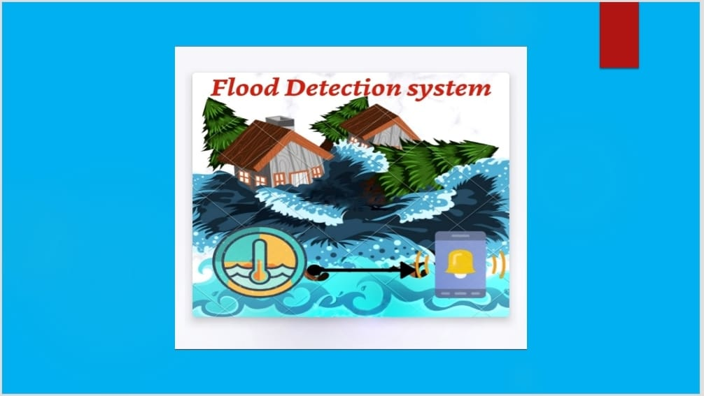
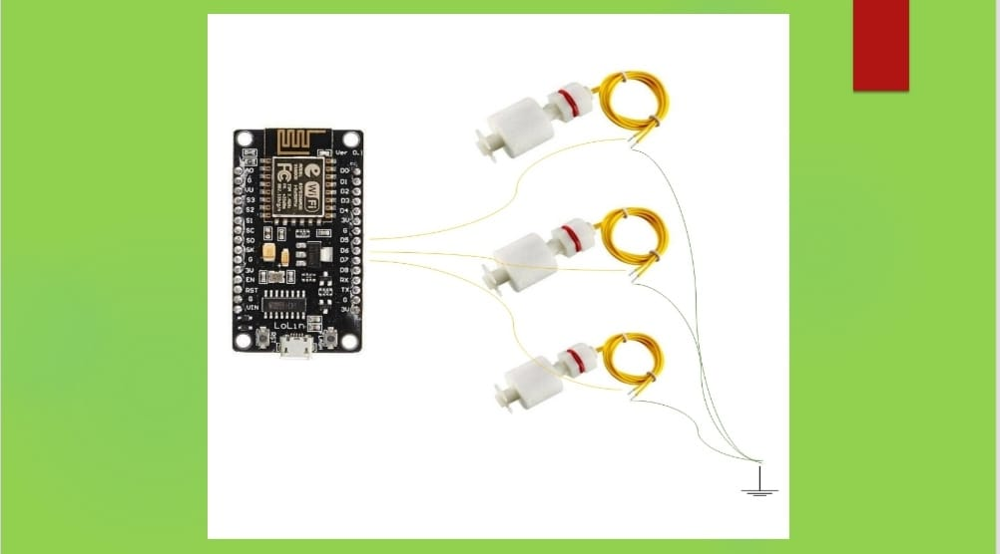
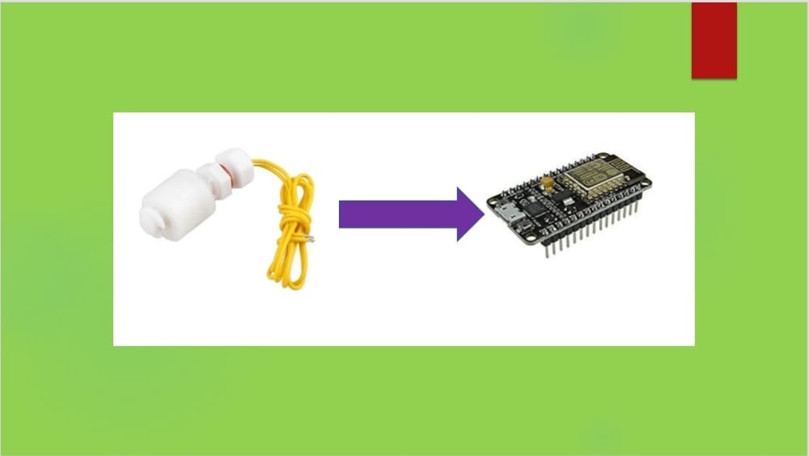
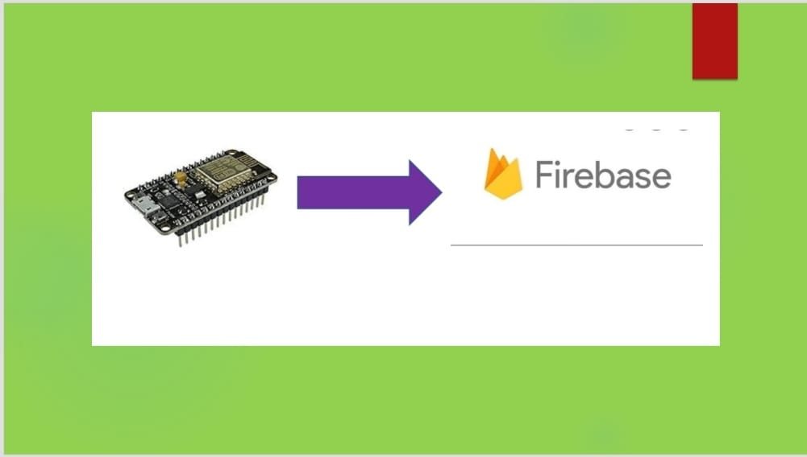
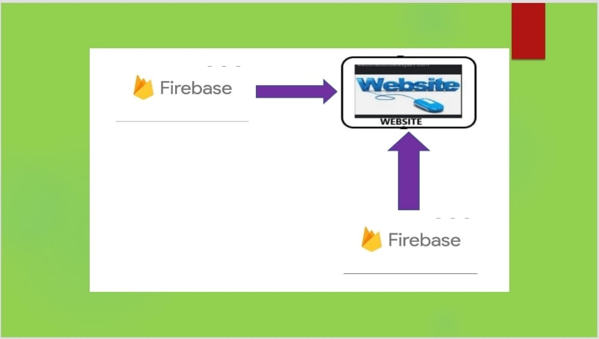
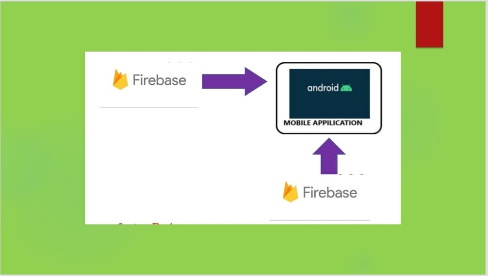
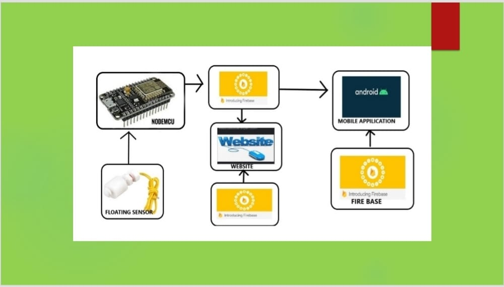

Flood Detector
OBJECTIVE

The main objective of the project is to intimate flood level in advance in
order to control human losses by evacuating individuals to secure locations. It is
understood that flood risks will not decrease in the future and with the beginning
of climate change, flood intensity and frequency will threaten many regions of the
world . To minimize the extent of damages caused by flood, warning systems to inform
the people of the disaster should be implemented in high risk areas. This system wil
l be able to reduce the damages of flood. The system should be designed to be able to
detect the rising levels of water that can be done by the help of float sensors.
STEP 1:- CONNECTIONS

The Design consists 3 float sensors which are connected in parallel with the nodemcu (inbuilt esp8266
module) which are placed at 3 different levels at flood prone areas.
(i)the sensor(1) it intimates that level of the water is moderate
(ii) the sensor(2) it intimates that level of the water is high
(iii) the sensor(3) it intimates that level of the water is very high
STEP 2:-DATA SENDING PROCESS

The information generated by the sensors was passed to the firebase database via esp8266 wifi module .
(i) if the water level reaches the sensor(1) it will sends a value of 1(moderate) to the database
(ii)if the water level reaches the sensor(2) it will sends a value of 2(high) to the database
(iii)if the water level reaches the sensor(3) it will sends a value of 3(very high) to the database
(iv)if the water did not reach any level by defaultly it will sends a value of o(no readings) to the database
We have to send a constant value of the latitude and the longitude of the device.
STEP 3:-FIREBASE WORKING

The values collected by the Firebase will be changed dynamically with out any delay,
if the level of the water changes .it can easily accepts all the
data dynamically if any new devices added to this project
STEP 4:-FLOOD PREDICTOR WEBSITE

The main motive of the website is to encourage the people to make the collaborations ,How To Collaborate
page contains all the code that we had used in the part of this project.Even a non-technical man can also
make a device without any help
The website is designed in a dynamic way(the website automatically converts according to the device ),in
order to give the user a friendly user interface.
The website is designed in a way ,it will easily accepts the data ,if any new collaborations was made .
The website will render the data taken from the firebase and resend the data to the firebase in a systematic
way ( say 1 hour) along with the time,it will send the data at the starting of the every new hour
The website contains a forms to note about the concerns of the users ,the form data will be stored in the
firebase.
STEP 5:-ANDROID APP DEVELOPMENT

Here comes the crucial part of this project
The main motive of creating a mobile application is to take the location of the users device.
This project mainly requires location to start the work, For this we have to use mobile application to
fulfill our needs. Mobile application is used to take the users locations
The mobile applications contains to types of the users ,one is normal user and the authorized people
WORKING:
When the user wants to look at the flood levels,the app will search the nearest device to his location . By
considering the flood levels collected at that device and calculating the distance between the user location
and device location it will give a level to the base of 10.
If the levels are increasing we will push a message notification to the authorities to make them alert.
WORKING PROCESS
